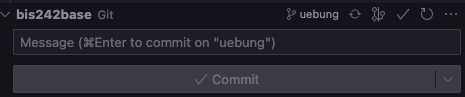
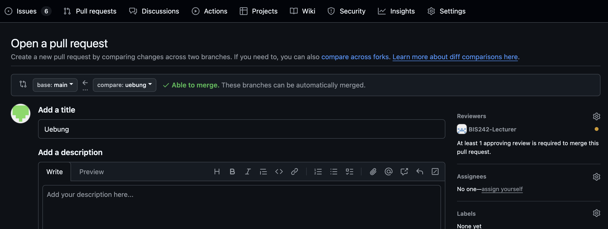

Übung Business Intelligence
Einarbeitung GIT & DBT Projekt
Aufgabenstellung
- git branch erstellen
- dbt Modell erstellen
- .sql File erstellen
- Modell ausführen
- Daten überprüfen
- dbt Modell dokumentieren
- .yml File erstellen
- Modellbeschreibung hinzufügen
- dbt Dokumentation generieren
- Änderungen in git pushen
- Änderungen der Gruppenmitglieder pullen
git Branch erstellen
branch erstellen über Command Line (1x pro Gruppe):
# in Projektverzeichnis navigieren cd ..../bis242ws250x # branch lokal erstellen und auschecken git checkout -b uebung # branch veröffentlichen git push
Anschließend auf github.com überprüfen ob der branch erstellt wurde
Virtuelle Umgebung aktivieren
Wichtig: Vor dem Ausführen von dbt-Befehlen muss die virtuelle Umgebung aktiviert sein.
VS Code aktiviert die venv normalerweise automatisch. Falls nicht:
Windows (PowerShell):
.\.venv\Scripts\Activate.ps1
macOS / Linux:
source .venv/bin/activate
dbt Modell erstellen
Im Ordner "uebung3" soll ein neues dbt Modell erstellt werden, siehe dbt Doku
- Webshop-Bestellungen vom 20.03.2022 inkl. Vor- und Nachname des Kunden
- eigenes Namenskürzel im Modellnamen, z.B. uebung3_mv.sql
- Materialisierung: Tabelle
- Modell ausführen (am besten nur das neue Modell)
Daten in Datbaricks überprüfen
dbt Modell dokumentieren
Zu dem erstellten Modell soll eine kurze Beschreibung hinzugefügt werden
- uebung3_{kürzel}.yml Datei mit Beschreibung erstellen, siehe dbt Doku
- HTML Dokumentation des dbt Modells erzeugen und aufrufen, siehe dbt Doku
Screenshot des Modells aus der HTML Doku als "uebung3_doku_{kürzel}.png" in den Ordner uebung legen
Änderungen in git pushen
Änderungen in VS Code überprüfen und über Command Line pushen

# Änderungen in lokaler Staging Area hinzufügen
git add -A
# commit auf lokales Repository
git commit -m "kurze Beschreibung was geändert wurde"
# pushen
git push
Anschließend auf github.com überprüfen ob die Änderungen angekommen sind
Änderungen der Gruppenmitglieder pullen
# lokales git synchronisieren
git fetch --all
# Änderungen in lokales Repository holen
git pull
Anschließend überprüfen ob die Files der Gruppenmitglieder vorhanden sind
Pull Request uebung -> auf main erstellen

- Repository auf github.com aufrufen
- Pull Request erstellen: uebung -> main
- Lecturer Gruppe als Reviewer hinterlegen
Ergebnis der Übung
- Tabelle in Databricks erstellt
- .sql und .yml Datei in git gepusht
- dbt Doku generiert und Screenshot abgelegt
- Pull Request erstellt